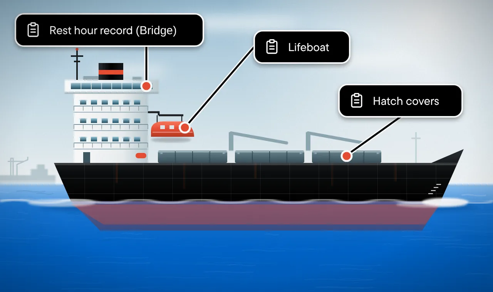

Random choices turn into patterns.
If you observe the data long enough, randomness turns into clear, predictable trends.
Walk into a grocery store on a Friday and look at what people are buying. Lemons, firewood, hot chocolate. At first glance, their choices seem completely random.
But look at five years of sales data, and a different picture emerges. You begin to notice that on cold, rainy Fridays, people buy more firewood, soup and hot chocolate.
What looked like random individual choices starts to follow a pattern when you have enough data.
A deficiency found on a particular ship during a particular port state control inspection may seem unpredictable. But when you look at thousands of inspections, certain patterns become clear.
A ship's characteristics—its type, age, size, equipment design and technical particulars—can influence the kinds of deficiencies it is more likely to receive.
Inspectors are human too. They have their own routines and areas of focus. Over time, inspection practices at different ports can also reveal recognisable patterns.
Most Likely Findings brings these two sets of patterns together: the vulnerabilities associated with your vessel's characteristics and the historical inspection trends at your destination port.
The result is a list of deficiencies that are more likely to be found on your ship, helping the crew focus their attention on the areas that matter most before arrival.

Two sets of patterns, one priority list.
Our machine learning models analyse more than a million recorded PSC deficiencies across major MoU regions, including those covered by the Paris MoU and Tokyo MoU, to identify recurring patterns in inspection findings.
The model works on two levels. First, it examines which deficiencies occur more frequently on vessels with similar characteristics, such as ship type, age, size & equipment design. Second, it looks at the types of deficiencies recorded at different ports and how these patterns change over time.
By combining your vessel's specific profile with the inspection history and trends at your destination port, the model estimates which deficiency categories are most likely to be recorded during a PSC inspection.
It then filters out lower-probability findings and produces a focused list of areas that deserve closer attention.
The result is a vessel-specific, port-specific priority list, delivered directly to your phone, helping the crew make better use of their preparation time before arrival.